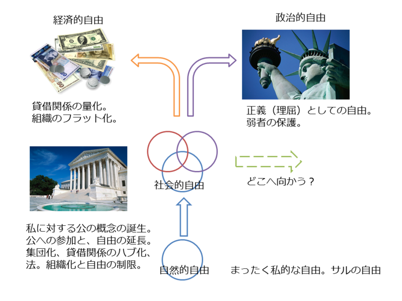

四つの自由
公開日：

過去記事の改稿・再掲です（http://blog.daruyanagi.net/archives/451）
自然的自由 ―― サルの自由
「自然的自由」とは、孤立した個人のもつ自由で、まったくの「私」の自由のこと。「サルの自由」と言っていいかもしれない。
「自然的自由」においては、何の制限もないので何をしてもよい。他者を傷つけてもいいし、他者から奪ってもいい。一切の協力・協業の義務を負わないが、その代わりできること――可能性――も個々人の能力に制限される。その点では、残り3つの自由には、自由度≒可能性で劣る。
この自由を信奉する人：自然主義、アナーキスト、テロリズム信奉者
社会的自由 ―― みんな少しずつ我慢してできること
しかし、社会を形成する上で「サルの自由」は制限されるべきだろう。社会を形成することは、「サルの自由」を失ったことを補って余りある自由をヒトにもたらす。個人の力では及ばないことであっても、おのおのが少しずつ力を出し合えば不可能ではない。この社会を成すことで得られる自由≒可能性を、「社会的自由」と呼んでみる。実際のところ、サルですら自らの自然的自由を一部制限して、助け合いや互恵に基づく社会的自由を享受している。
しかし、負の側面がないわけではない。
「社会的自由」は、権力のピラミッドを形成する。助け合いや互恵はヒトに上下関係を強いる。みなが同じ能力と財をもっているならば平等な等価交換も可能だが、実際はそうもいかない。より多くの恩を売れるヒトは、社会でより高い位置を占めることができる。恩を返せない人は、服従する。歴史のはじめ、「市民」とは「王」や「貴族」にほかならなかった。次いで、それはすべての男性戸主に拡大され、次第に女性や子供も含まれるようになっていった。ただ「社会的自由」は、基本的にはコミュニティの拡大そのものには否定的で、その存続、領域と権威の維持が優先さる。実際の権利の拡大にはあとに述べる経済的自由と政治的自由が大きな役割を果たした。
また、「社会的自由」とは、互恵の輪に参加する権利と表裏一体だ。その権利は「公」への貢献の対価として与えられる。たとえば、財産や軍役をもって「公」に貢献する権利をもつモノのみが「市民」として互恵の輪（≒都市＜ポリス＞）に参加することを許された。逆に、十分な貢献を行わないものは制裁を受ける。「村八分」などがそうだ。また、既存の互恵の仕組み、互恵コミュニティのアイデンティティ、前例、しきたりを破壊する者も、同様に制裁を受けた。この「不自由」は、「社会的自由」を享受する以上、甘んじて受け入れるべきことである。ストア哲学や儒学はそうした考えの拠り所となった。
「社会的自由」は、基本的に閉鎖的で小さなコミュニティの自由でもある。コミュニティは、制裁によって個人がもつ「サルの自由」を制約する。その一方で、文化特有の慣習・道徳・法律・制度を生み出し、洗練させ、最後には封建制のような高度な社会組織を創りだす。
この自由を信奉する人：古典的共和主義者、保守主義者、民族主義、（行き過ぎると）国粋主義、全体主義
経済的自由 ―― みんなが好きにやれば、もっとすごいことができる
「社会的自由」のキーワードが「小さな社会の互恵」であるとしたら、「経済的自由」のキーワードは「大きな社会の交換」とでもなろう。
互恵と交換の大きな違いは、前者が恩の貸し借りや服従によって暗黙的に支払いを行うのに対し、後者は支払いが帳簿に記述されるという点にある。恩讐はコミュニティによって収支管理がなされるが、貨幣は個人と個人の相対取引で決済される。コミュニティの特殊な道徳より、個人がもつ（とされる）普遍的な権利、個人と個人の契約が優先される。コミュニティを超えた、対等な関係こそが「経済的自由」な基盤（≒市民法）だ。
交換は、コミュニティ同士の接触から始まった。
山の民、海の民の境界に定期的な市が立ち、交換が行われたのが街の始まりだと言われている。次第に、王や貴族も街に住むようになるが、それは彼らが封建的な特権を利用して商業を牛耳ろうとしたからだ。彼らはコミュニティから吸い上げた富を交換し、より多くの自由≒可能性を手に入れ、それを領民に分け与え、さらに多くの権威を獲得する。
一部の有力な商人が王侯を凌ぐ力を手に入れた例は、少なくない。なかには古いコミュニティへ交換の論理を持ち込み、コミュニティの内包する自由を大幅に拡大させようとする為政者も現れた。たとえば、カエサルや織田信長などはそうかもしれない*1。アレクサンドロスやチンギス・ハーンは世界を征服して既存の権威を打ち倒した時も、交易が盛んになり「コスモポリタニズム（世界市民主義）」の空気が世界に充溢した。
しかし、その動きはあくまでも単発的なもので、一般的に「経済的自由」は警戒され、「社会的自由」に従属するものとみなされてきた。英仏戦争・大航海時代を経て、欧州に大軍拡競争が起こり、産業革命によって「社会的自由」が突き崩され、近代が訪れるまでは。
人々は「社会的自由」の軛を解かれ、私欲の追求が肯定され*2「経済的自由」が社会に浸透する。封建制度は崩壊し、貨幣と産業の時代がやってくる。人々は働くという社会行為を貨幣に替えることで、誰でも自由に＜互恵の輪＞に参加できるようになる。既存の慣習・道徳・制度を身につけ理解することは重要ではなくなり、むしろ個人間の礼儀・契約の順守が重んじられるようになる。基本的人権と参政権と職業選択の自由と引越しの自由を手に入れる。しかし、これは新しい「不自由」を生んだ。
政治的自由 ―― おかしいことをおかしいという自由
「経済的自由」は、ピラミッド型の互恵組織＜小さな社会＞を破壊して、個人と多数が直接対面する＜大きな社会＞を生み出した。これがグローバリズムと呼ばれるもので、確かに人々をより自由にした。しかし、「みなが同じ能力と財をもっているならば平等な等価交換も可能だが、実際はそうもいかない」。恩義の貸借不均衡は、そのまま貨幣の貸借不均衡を生み出す。
この不均衡は、差し当たり大きく二つの問題――不自由――を生み出す。
一つは、食べていくのには少なすぎる貨幣しか稼げないヒトたちが死んでしまうという問題。彼らは自由意思で労働力を売る（もしくはそれすらかなわない）奴隷だ。
一つは、貨幣の貸借不均衡が、社会的影響力の不均衡につながる問題。食べるだけには多すぎる貨幣を稼ぐヒトがより多くの社会的自由を金銭で得ようとするため、自由放任では貨幣の多寡が経済的のみならず社会的地位の上下に直結してしまう。
人々は自由になり、平等になったのではなかったのか。
「政治的自由」は、そんな「経済的自由」への不信から生まれた。「経済的自由」が用意した正義の概念を精緻にし、市民法へ補正を加える（≒社会法）。「政治的自由」の法は、封建的な権威の裏付けをもって始まり、自由経済が育んだ市民社会を基盤にしているが、それらのもつ「不自由」からの人間の開放を目指している。
政治的自由がもつ最大の目的は、社会的・経済的自由がもつリクツに合わないこと＜矛盾＞を指摘し、是正することにある。たとえば、力の上下関係を悪用して労働者をタダ働きさせてはならない、オカネで政治家を買収して好きな事をしてはいけない、離婚するのは自由だけど子どもを捨てる自由はない、などといったことだ。
一方、政治的自由がもつ最大の弱点は、屁理屈を許すことにある。ヤクザにも生きる権利がある（確かにある）、殺人者にも生きる権利があるから死刑はよくない（そう言われてみればそうかもしれない）、国際免許をうまく使えば運転免許停止を実質的に免れることができる（すごい！）、民主党のマニフェストは契約じゃないので民意に問わず破棄してもいい（おうのう！）。リクツにリクツを重ねるので、当初の前提からは外れた結論が導きだされることも少なくない。
それぞれの「自由」のバランス
ざっくり自由を4つに分けてみたけれど、これがいい分け方かどうかはわからない。そのひとつの「自由」を信奉するのではなく、複数の「自由」を跨った主張も多く見られる。
たとえば、マルクスによる「経済的自由」の批判・検討から、私的所有を廃すれば*3権威なき「社会的自由」が可能だと考えたのが共産主義だろう。また、リバタリアニズムはもっぱら「経済的自由」を信奉していると思われがちだけれど、出発点は「政治的自由」にある。同じく「政治的自由」から出発してそれを批判しつつ、「社会的自由」の可能性を見なおそうとするのが最近話題のコミュニタリアニズムと言える。
ただ、このブログでたびたびとりあげる「贈与-交換」論を背景に分けてみる*4とこうなるだろう。そして、「新しい共和主義」がそのどこに位置するのかを明らかにすること、もしくは「贈与-交換」論の検討から「新しい自由」の提示を試みることが、このブログの目標のひとつでもある。